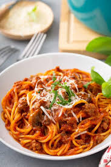

Spaghetti Recipe

Description
A great pasta for you to suck on lol
Ingredients
- Ground Beef
- Veggies
- Tomato Products and Season
Steps
- Cook ground beef in a saucepan over medium-high heat with garlic, onion, and green pepper. Stir until the meat is brown and crumbly. The vegetables should be tender.
- Stir diced tomatoes, tomato sauce, and tomato paste into the beef mixture. Add oregano, basil, salt, and pepper. Simmer until thick and aromatic, then serve over cooked spaghetti noodles.